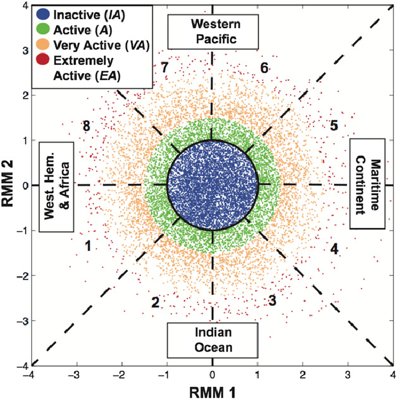
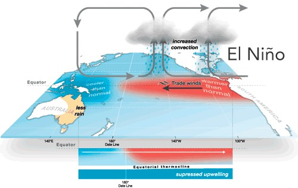
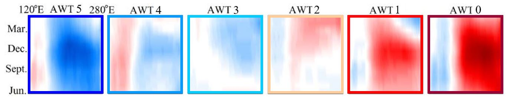
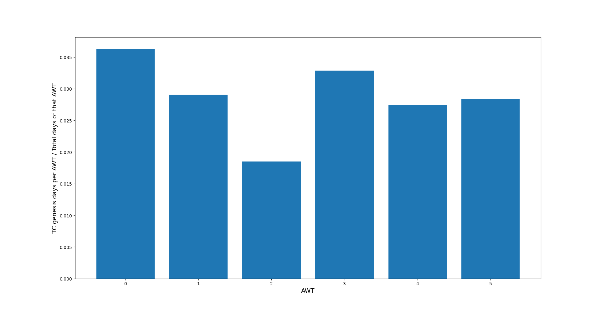

import warnings
warnings.filterwarnings('ignore')
from large_scale_predictors_functions import *
#put your path
path = r'D:\\forecast_book\\large_scale_predictor_data\\'
#geopandas as background map
coasts_low=geopandas.read_file(path+'GSHHS_shp\\h\\GSHHS_h_L1.shp')[['geometry']]
gdf_l=shift_map(coasts_low,180)
2. Large Scale Predictors¶
2.1. Madden - Julian Oscillation (MJO) ¶
The MJO is an eastward moving disturbance of clouds, rainfall, winds, and pressure that crosses the planet in the tropics and returns to its initial starting point in cycles of approximately 30 or 60 days. It is the dominant mode of atmospheric intraseasonal variability in the tropics \(\href{https://journals.ametsoc.org/view/journals/wefo/18/4/1520-0434_2003_018_0600_tiotmo_2_0_co_2.xml}{\text{(Hendon & Salby, 1994)}}\):
The MJO consists of two phases: the enhanced rainfall and the the suppressed rainfall. They produce opposite changes in clouds and rainfall and this entire dipole propagates eastward. Strongest MJO activity often divides the planet into halves: one half within the enhanced convective phase and the other half in the suppressed convective phase.
The MJO phases can be observed and represented through the RMM index, which is a combined cloudiness- and circulation-based index that has been frequently used for real-time prediction and definition of the MJO \(\href{https://journals.ametsoc.org/view/journals/mwre/132/8/1520-0493_2004_132_1917_aarmmi_2.0.co_2.xml}{\text{(Wheeler & Hendon, 2004)}}\):

2.2. Annual Weather type (AWT) ¶
ENSO is one of the most important climate phenomena on Earth due to its ability to change the global atmospheric circulation; since it can lead to changes in sea-level pressures, sea-surface temperatures, precipitation and winds across the globe. ENSO describes the natural interannual variations in the ocean and atmosphere in the tropical Pacific. This interaction between the atmosphere and ocean is the source of a periodic variation between below-normal and above-normal sea surface temperatures and dry and wet conditions along the years. The tropical ocean affects the atmosphere above it and the atmosphere influences the ocean below it.
Typical behavior of the couple system of ocean and atmosphere during El Niño in the equatorial Pacific \(\href{http://www.bom.gov.au/watl/about-weather-and-climate/australian-climate-influences.shtml?bookmark=enso}{\text{(Australian Bureau of Meteorology)}}\):

Patterns \(\href{https://agupubs.onlinelibrary.wiley.com/doi/abs/10.1029/2019JC015312}{\text{(Anderson,et al.,2019)}}\) 
2.3. MJO and AWT relationship with TC genesis ¶
TCs tracks transferred to MJO+AWT combinations according to the genesis point, with the combination probability as the background color
fig_tcs = plot_tcs_mjo_awt(path, gdf_l)
TCs tracks reaching category 3 or greater transferred to MJO+AWT combinations according to the genesis point, with the combination probability as the background color
tcs3_mjo_awt = plot_tcs3_mjo_awt(path,gdf_l)
Density histogram of TC genesis according to AWT

Daily mean precipitation (TRMM) transferred to MJO+AWT combinations
path = 'D:\\forecast_book\\large_scale_predictor_data\\'
fig_trmm = plot_trmm(path,gdf_l)
Daily mean precipitation (TRMM) anomalies transferred to MJO+AWT combinations
fig_anom_trmm = plot_anom_trmm(path,gdf_l)
Conclusions:
MJO phases 6,7 and 8 and AWT 1 and 3 show the highest TC genesis activity.
The combination MJO phase 7 + AWT 4 is the most intense one for all TC categories and when filtering from category 2.
El Niño, which is highly unlikely has fewer TC genesis but it is the most active in TCs genesis with respect of its total days and a greater proportion of TCs reaching at least category 2.
AWT 2 is the least probable and is the one with least TCs genesis activity.
AWT 1 have same TCs genesis along all MJO phases.
TCs genesis occurs generally in areas of intense precipitation, above the mean (positive anomalies) and the higher categories of TC are linked with the most extended and amongst the most intense precipitation clouds.